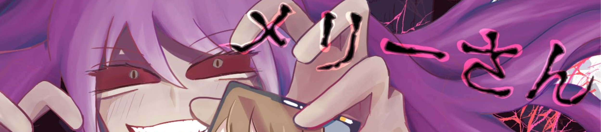

全ステージ クリア
背筋が凍りついた。なかむらゆうすけ。俺の本名だ。
Twitterではもちろんハンドルネームを使用していた。なのにどうして…
俺は相手のことなど何も知らない。でも相手は俺のことを知っている。それも公開していないことまで。
ただただ恐怖だった。
警察に相談するか？でも公の場で晒されたわけではないし、
メッセージも間接的なものだ。取り合ってもらえるかわからない。
ならどうする？
「やるしかない…」
自分でやるのだ。自分で、俺が自らこの手で相手の正体を暴くしかない。
ひとまず、何か手がかりがあるかもと思い、相手のアカウントのホーム画面を開く。
アイコンも初期アイコンで名前も適当なものだったから捨てアカかと思いきや、普通に使われているアカウントだった。
誰かの裏アカといったところか。
投稿を一通り見ていると、ある投稿の写真が目に留まった。
俺の高校の女子制服だ。また、他の投稿を見るに今年の3月に卒業したらしい。つまり、俺と同級生。それも同じ高校の。
それじゃあ、犯人は俺の知り合い？だから誕生日や住んでる地区、本名も言い当てられた？
また別の投稿が目に留まる。
「この髪飾り…」
見覚えのあるものだった。俺は高校の卒業アルバムを引っ張り出す。
クラス写真を見ると、同じ髪飾りをした人物が一人いた。
「お前、神田だろ。」 俺はDMを送った。
神田はあっさり自供した。
卒業式の日、俺は神田に告白された。だが俺は振った。そのこと自体はもう気にしてなかったものの、
たまたま俺のアカウントを見つけ、ほんの少し怖がらせてみたかっただけだったそうだ。
神田にも強い悪意があったわけではなく、俺にも実害はなかったので今回のことはお互い水に流すということになった。
今回の件で思ったことがある。
実はお互い知り合いだったとはいえ、SNSから個人を特定するのって案外簡単なことなのかもしれない。
炎上して個人情報晒された人達もこうやって暴かれていったのだろうか。
自撮りあげるの、やめようかな…。
遊んでくれてありがとう！
Special Thanks
リアル脱出ゲームとは
2004年に発表されたネットで爆発的に盛り上がった「脱出ゲーム」を、そのフォーマットそのままに現実世界に移し替えた大胆な遊びが「リアル脱出ゲーム」。マンションの1室や廃校、廃病院、そして東京ドームや六本木ヒルズなど、様々な場所で開催され、2007年に初開催して以降、現在までで累計820万人以上を動員。日本のみならず上海、台湾、シンガポールやサンフランシスコなど全世界で参加者を興奮の渦に巻き込み、男女問わずあらゆる世代を取り込む、今大注目の体験型エンターテインメント。
このゲームの企画者
企画・制作メンバーの紹介など。
ナゾ作成者 上原康平 林里悦
デザイン作成者 山口朋子
サイト作成者 橋野圭弥 仲村連